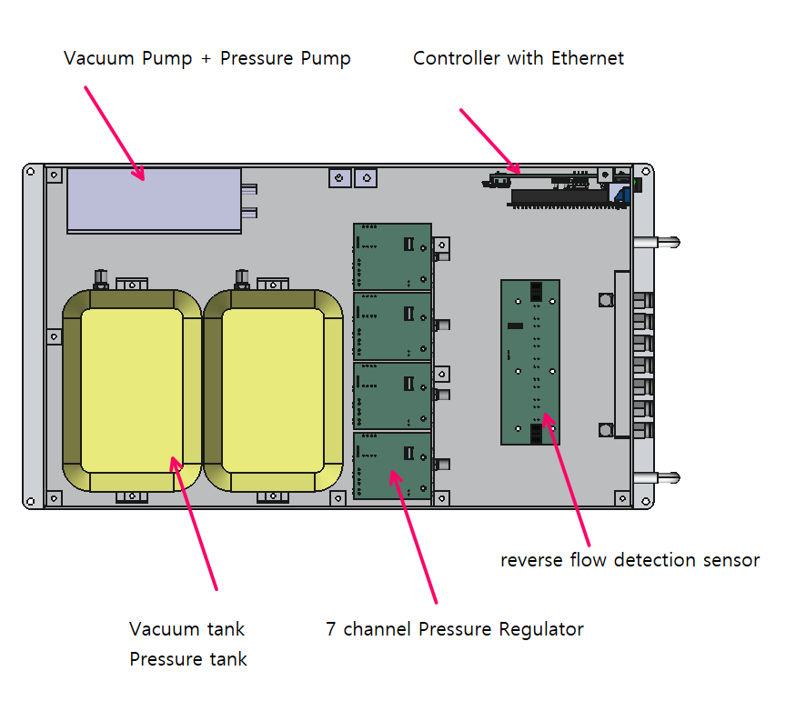
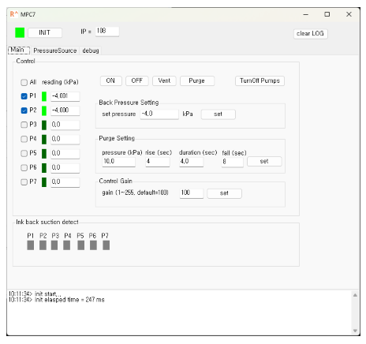
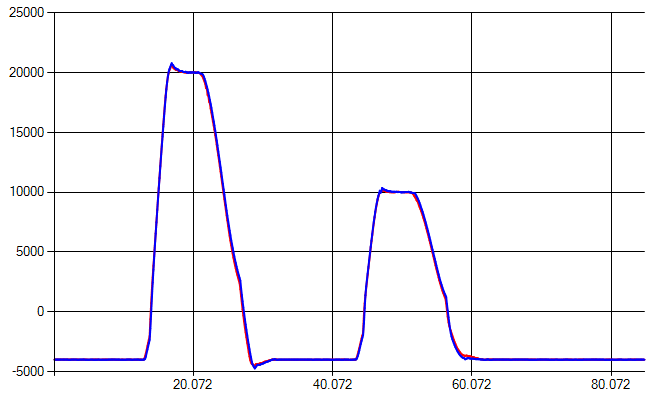
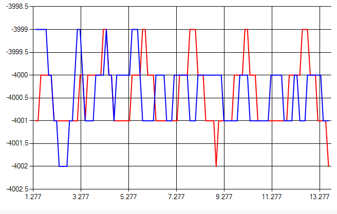

MPC7 is an independent 7-channel pressure controller for backpressure and purge pressure control in industrial inkjet printing applications. MPC7 has pressure generators inside for purge and backpressure control.
MPC7 has integrated pressure generators for both backpressure and purge pressure control.
For backpressure control, MPC7 can generate negative pressure down to -20 kPa. For purge pressure control, it can generate positive pressure up to 40 kPa. Each channel can be independently controlled, allowing for precise pressure management for multiple print heads.
It alas has a anti-reverse flow protection feature with ink detecting sensor for each channel.

Test application and DLL library is provided for easy integration with existing systems.

Purge and backpressure performance specifications:

